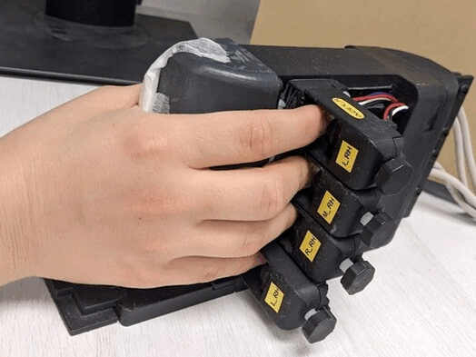

Danielle Sapir
B.Sc. Student at Technion - Israel Institute of Technology.Interested in neuroscience, computational biology, and deep signal processing for medical applications.
About Me
I am a senior B.Sc. Student in the Electric and Computer Engineering faculty at the Technion , under the Technion Excellence Program. I am researching finger dexterity motor control under the supervision of Prof. Firas Mawase. I am also participating in a research on machine learning driven optical genome mapping with Yevgeni Nogin under the supervision of Prof. Yoav Shechtman.
I am interested in practical research in the fields of neuro-science and computational biology, which can lead to breakthrough diagnostics and treatments.
Before my studies I worked as a data engineer at Levl.
Current Projects
fMRI Finger Dexterity Clinical Trial
|  | Danielle Sapir, Amitay Lev, Firas Mawase A comparative fMRI trial aimed at mapping the differences in fine dexterous finger movement control between proffesional pianists and non-musicians |
OM2Seq
| Yevgeni Nogin, Danielle Sapir, Yoav Shechtman Using deep learning methods on microscopic images of bio-marked patterns in DNA, we attempt to develop a reliable method for molecule alignment with the human genome and classification.\n Listen to Yevgeni present this project to Michael Levin's group at Tufts University: |
Past Projects
2020-21 Mindstate Ideation Hackathon - Ichilov and Rambam hospitals
| Danielle Sapir, Amitay Lev, Firas Mawase In this Cornell Tech - Technion - Lightricks joint hackathon, our group was given the "Smart Hospital" prompt. We designed and presented CareFlow - an app that streamlines the work of Nurses and improves healthcare outcomes. Watch our presentaion: |
Personal
Freelance dancer, teaching modern and comtemporary dance.I am a newly certified scuba diver and I love cooking, skiing, yoga and pilates :)
Reach out at danielle.sapir@gmail.com for any proffesional and creative endeavours!